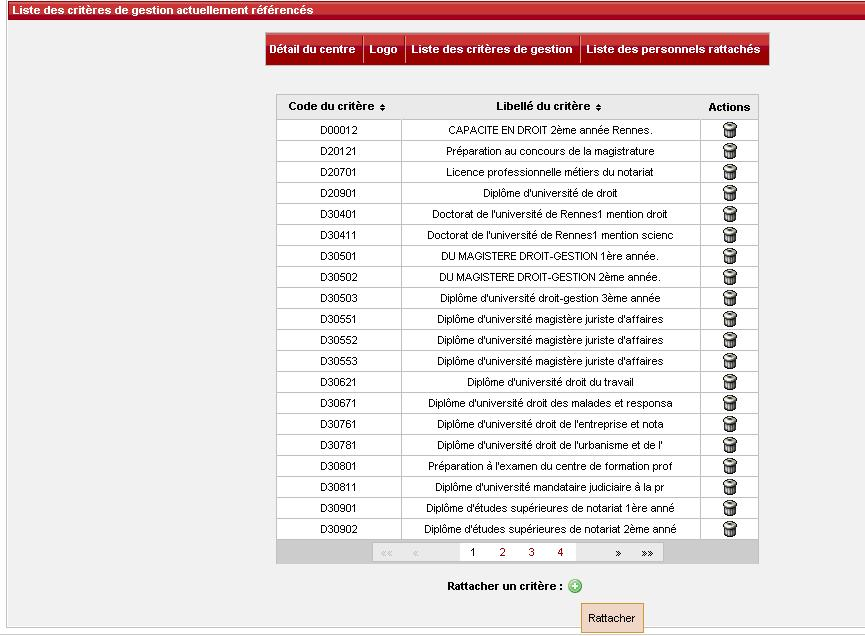
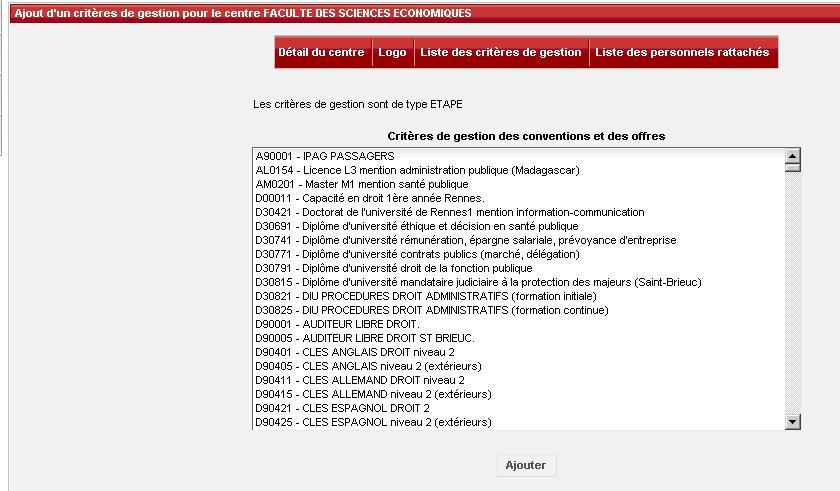
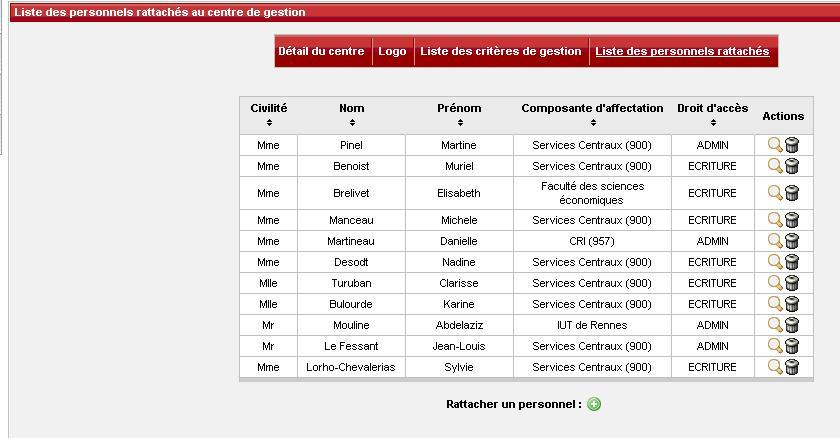
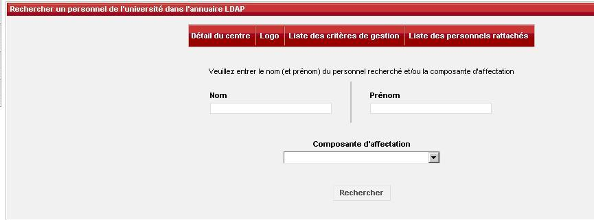
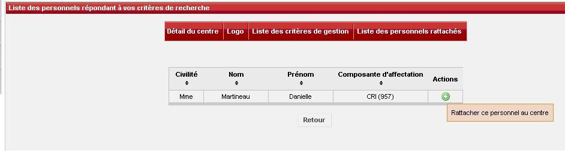

Comment enrichir cette aide ?
Il faut rédiger un ticket dans lequel vous expliquerez
avec le plus de détails possible les problèmes rencontrés.
La rédaction des tickets se fait dans la rubrique "Assistance"
sur http://ent.univ-rennes1.fr/
Comment Rattacher Une Etape à Mon Centre de Gestion ?
Sur le détail d'un centre de Gestion, Cliquez sur "liste des critères de gestion", la fenêtre ci dessous s'affiche :

La liste à choix multiple propose les critères qui n'ont pas déjà été rattachés à un centre de gestion .
Cliquez sur le bouton "Rattacher un critère", la fenêtre ci-dessous s'affiche :

Sélectionner le(s) critère(s), cliquer sur Ajouter.
Comment Rattacher Un Personnel à Mon Centre de Gestion ?
Sur le détail d'un centre de Gestion, Cliquez sur "liste des Personnels rattachés", la fenêtre ci dessous s'affiche :

Cliquer sur "rattacher un personnel", la fenêtre ci-dessous s'affiche :

Renseigner les critères de Recherche, Cliquez sur le bouton "Rechercher " pour terminer la saisie du ou des critères(s) de recherche d'un personnel ,
Les informations : civilité, nom, prénom, composante d'affectation figurent dans l'annuaire LDAP et ne sont pas modifiables dans cette application.
Cliquer sur "+" de l'action

Précisez le droit d'accès accordé à cette personne , les différents droits possibles sont :
- ADMIN : donne le droit d'administrer un centre (modification des coordonnées du centre de gestion, ajout et suppression de personnels rattachés),
ainsi que les mêmes droits qu'en ECRITURE
- ECRITURE : donne le droit de gérer les conventions de stage et les offres de stage ou d'emploi de ce centre (création,modification,suppression,validation) ,
le droit de gérer les structures d'accueil de l'établissement (création,modification,suppression,validation).
La personne qui saisit une offre de stage ou d'emploi pourra choisir de diffuser également cette offre pour d'autres centres de gestion que le sien.
- LECTURE : donne le droit de visualiser les conventions et les offres de stage ou d'emploi du centre de gestion
Cliquez sur le bouton "Ajouter" pour terminer la saisie, une fenêtre de confirmation de saisie s'affichera.